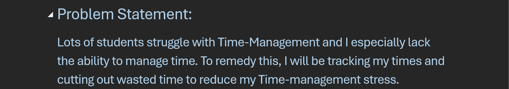
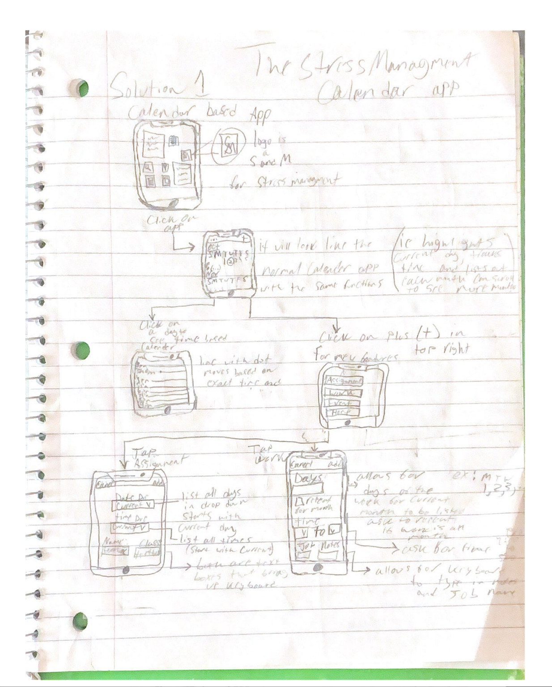
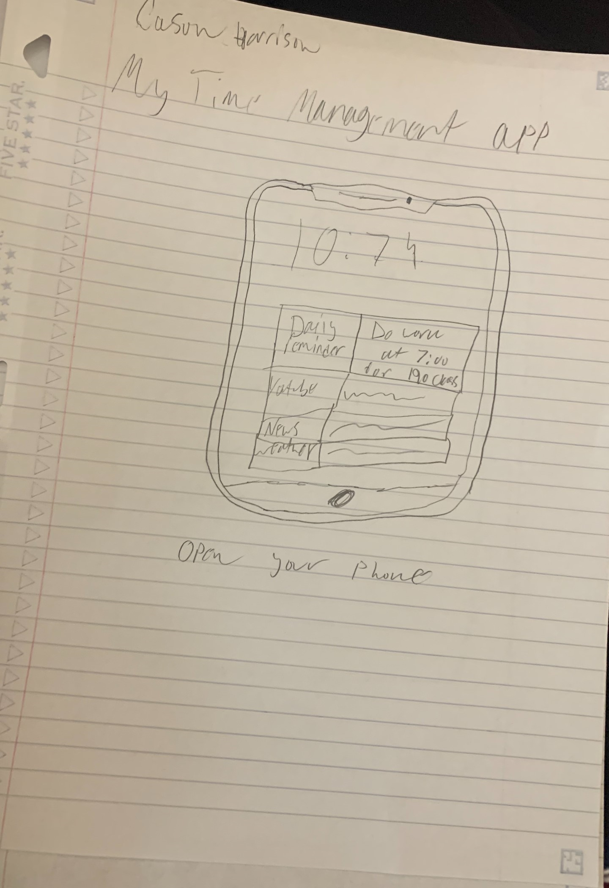

Hello! My name is Cason Harrison.
I’m a student at Columbia University studying in Computer Science earning my bacholors in programming.
I’m passionate about cybersecurity and artifical intelligence that is used for entertainment.
My goal is to develop a positive and secure internet sphere that will connect people amd protect them from bad actors on the internet.
Problem Statement:

Time-Management is a primary reason for student stress,
and if you can change your mindset on Time-Management
and make it an assignment then you can reduce stress
Affinity Diagram

Affinity Diagram that shows the things that must be considered and a couple of possible solutions to my Time-managment issue
Sketches

These are sketches of potential apps that could possibly work as reminder based time-managment apps, The first one is my most
developed one and that is primarly because that sketch is the more thought out while the others come directly from potential ideas,
found in the affinity diagram.
Prototype

This is a prototype of a time-managment app, specifically of the first calander app that was shown in my sketches